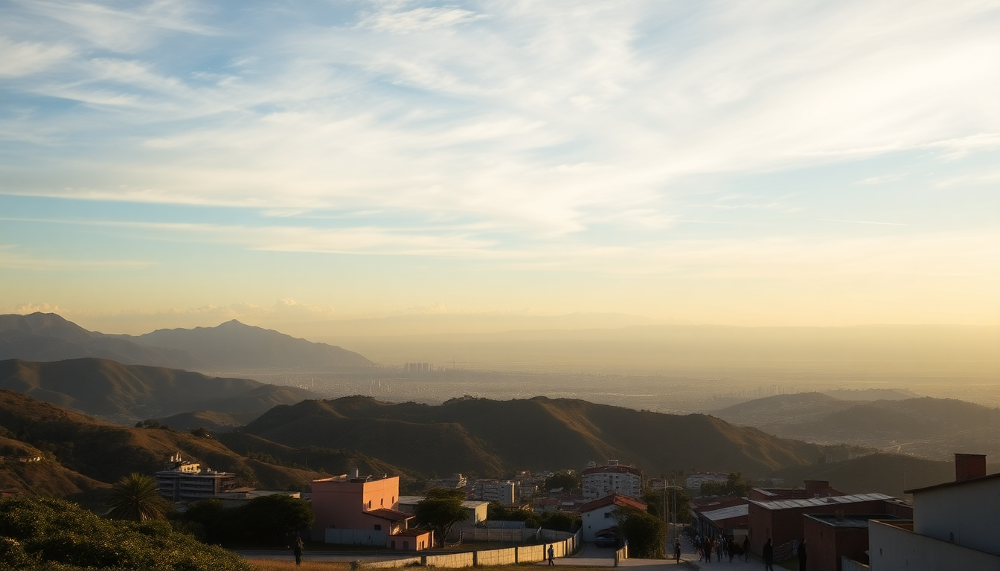

Getting Around Peru: Buses, Flights & Car Rentals

I spent three weeks bouncing between Lima, Cusco, and Arequipa, and the biggest headache wasn’t altitude sickness—it was figuring out how to get from one city to the next without wasting half a day or blowing my budget. Here’s what actually worked, what didn’t, and the routes I’d take again.
Should I fly or take the bus between cities?
For long hauls—Lima to Cusco, or Lima to Arequipa—fly. The bus rides are 20+ hours and the roads are winding, especially through the Andes. I flew LATAM from Lima to Cusco for about $70 one-way, and it took 1.5 hours. The bus would have cost $30 but taken 22 hours and left me wrecked.
For shorter legs, buses are fine. The ride from Arequipa to Cusco is about 10 hours on a decent overnight bus. I went with Cruz del Sur on that route—comfy seats, a meal included, and they actually stuck to the schedule. For daytime trips under 6 hours, like Cusco to Puno, buses are the budget-friendly choice.
- Lima to Cusco: Fly (1.5 hours, $60–$100). Skip the bus.
- Lima to Arequipa: Fly (1.5 hours, $50–$80). Bus is 16 hours.
- Arequipa to Cusco: Overnight bus with Cruz del Sur or Oltursa (10 hours, $25–$40).
- Cusco to Puno: Day bus (6 hours, $15–$20) or tourist bus with stops at ruins (Peru Hop).
Which bus companies are actually reliable?
Cruz del Sur is the gold standard for safety and comfort. I took them from Lima to Paracas and from Arequipa to Cusco. Their semi-cama seats recline enough to sleep, and they have security at terminals. Oltursa is a close second—I used them for Lima to Nazca, and they were punctual with decent snacks.
Avoid the cheap no-name buses at the big Lima terminals. They’re cheaper by $10 but drivers speed on mountain roads, and I heard horror stories from other travelers about breakdowns in the middle of nowhere. Stick with the big three: Cruz del Sur, Oltursa, and Movil Tours.
- Cruz del Sur: Best for overnight routes. Book online a day ahead.
- Oltursa: Good for daytime coastal trips (Lima to Paracas).
- Peru Hop: Not a bus company, but a hop-on-hop-off service for gringos. Overpriced but convenient if you want English guides.
- Local tip: Buy tickets at the terminal in person for discounts—online prices are often 10% higher.
Is renting a car in Peru a good idea?
Only if you’re sticking to the coast and have experience driving in chaos. I rented a car for three days in Lima to drive south to Paracas and Nazca, and it was fine—the Pan-American Highway is straight and well-paved. But I’d never drive in Cusco or the Sacred Valley. The roads are narrow, drivers pass on blind curves, and police checkpoints are frequent.
In Lima, I rented from Hertz at the airport for $40/day with full insurance. Driving in Lima itself is a nightmare—lanes are suggestions, and mototaxis weave everywhere. If you do rent, get a GPS or use Waze offline. I got lost twice in Miraflores because street signs are rare.
- Rent in: Lima (coastal trips only) or Arequipa (Colca Canyon drive).
- Don’t rent in: Cusco (traffic jams, steep cobblestone streets) or the Sacred Valley.
- Insurance: Always buy full coverage. Third-party only is a gamble.
- Checkpoints: Keep your passport and rental papers handy. Police stop gringos often.
How do I get from Cusco to Machu Picchu without a tour?
It’s doable solo, but you need to plan. From Cusco, take a collectivo (shared minivan) or bus to Ollantaytambo—about 1.5 hours and $5. At Ollantaytambo train station, buy a PeruRail ticket to Aguas Calientes (the town at the base of Machu Picchu). That train costs $50–$70 one-way and takes 1.5 hours. Book PeruRail online at least a week ahead—walk-up tickets sell out.
From Aguas Calientes, you walk or take a bus up to the site. The bus is $12 round-trip and leaves every 15 minutes starting at 5:30 AM. I walked up once—it’s 1,600 steps and took me 90 minutes. Not worth it unless you’re training for a hike.
- Cusco to Ollantaytambo: Collectivo from Calle Pavitos ($5, 1.5 hours).
- Train to Aguas Calientes: PeruRail Expedition class ($50–$70).
- Bus to Machu Picchu: Consettur ($12 round-trip).
- Pro tip: Buy your Machu Picchu entrance ticket online weeks in advance. The 6 AM slot sells out first.
What’s the best way to get around Lima?
Uber is king in Lima. It’s cheap—$3–$5 for most rides within Miraflores or Barranco—and safer than hailing a taxi on the street. I used Uber almost daily to get from my hotel in Miraflores to restaurants in Barranco and the historic center. The city bus system, Metropolitano, is efficient but crowded during rush hour. I took it once from Miraflores to Plaza de Armas for $0.70, and it was fine, but I wouldn’t do it after dark.
For airport transfers, book a taxi through the official Taxi Green counter inside the arrivals hall. It’s $15 to Miraflores and takes 30 minutes in light traffic. Avoid the drivers shouting at you outside—they quote $20 and then try to negotiate.
- Uber: Best for daytime. Cash only on some rides.
- Metropolitano: Cheap ($0.70) but packed 7–9 AM and 5–7 PM.
- Airport taxi: Taxi Green (official counter, $15 to Miraflores).
- Walking: Safe in Miraflores and Barranco during the day. Don’t walk alone in the historic center at night.
Should I take a domestic flight between Cusco and Arequipa?
Yes, if you’re short on time. The flight is 1 hour on LATAM or Sky Airline and costs $40–$80. The bus takes 10 hours overnight. I flew from Cusco to Arequipa because I had only 4 days and wanted to see Colca Canyon. The flight landed at 8 AM, and I was in a collectivo to Chivay by 9:30 AM.
But the bus isn’t bad if you’re on a budget or want to see the landscape. The overnight bus from Cusco to Arequipa goes through the Andes at night—you won’t see much, but it saves a night’s hotel. I’d only do it on Cruz del Sur or Oltursa.
- Flight: LATAM or Sky Airline ($40–$80, 1 hour).
- Bus: Cruz del Sur overnight ($25–$35, 10 hours).
- My pick: Fly. The $40 difference is worth the morning you save.
FAQ
Can I use Uber from the Lima airport? Technically yes, but it’s a hassle. The app works, but drivers have to pick you up from the departures level (second floor) because arrivals is chaos. I waited 15 minutes for a driver who couldn’t find me. Stick with Taxi Green from the official counter—it’s $15 and they’re waiting right outside baggage claim.
Do I need to book train tickets for Machu Picchu in advance? Absolutely. PeruRail and Inca Rail sell out days ahead, especially during dry season (May–September). I booked my PeruRail ticket from Ollantaytambo to Aguas Calientes a week in advance and still only got the 3 PM departure. Last-minute tickets cost double from scalpers outside the station.
Is driving in the Sacred Valley safe? No. I considered it and then watched a minivan pass a truck on a blind curve on the Cusco-to-Ollantaytambo road. The roads are narrow, with steep drop-offs and no guardrails. Stick with collectivos or private drivers. A private driver from Cusco to the Sacred Valley costs about $50 for the day and is way less stressful.
Conclusion
- Fly between Lima, Cusco, and Arequipa—buses are too long for these routes.
- Use Cruz del Sur or Oltursa for overnight or day buses; skip the no-name companies.
- Rent a car only on the coast (Lima to Paracas) and never in Cusco or the Sacred Valley.
- Take collectivos from Cusco to Ollantaytambo for cheap access to Machu Picchu, but book the train and entrance tickets online early.
- Uber in Lima works well, but use the official taxi counter at the airport.